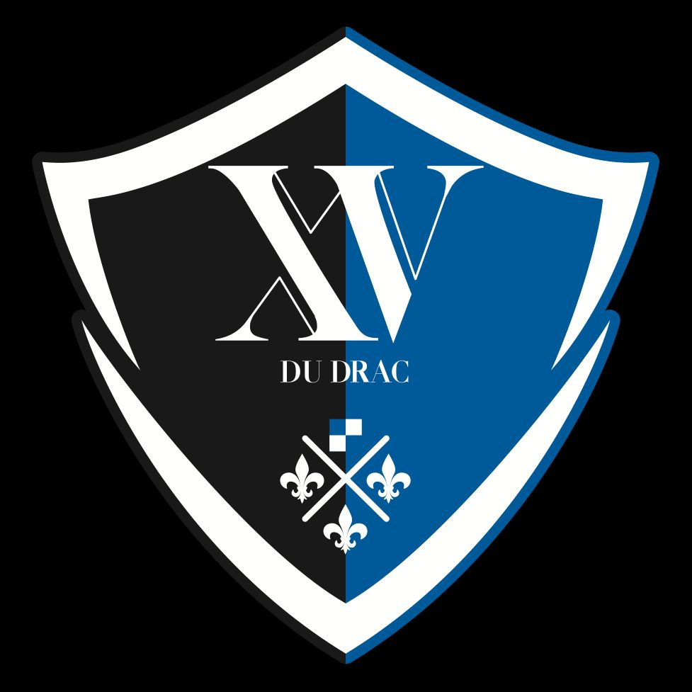

Combativité
On ne lâche rien sur le terrain, jusqu'à la dernière minute et au dernier mètre.
Amicale Laïque Echirolles Rugby — Depuis 1970 au cœur d'Echirolles
École de rugby, seniors, féminines & loisirs : un club, un maillot, une ambiance de troisième mi-temps qui ne s'arrête jamais.
4,6/5 sur Google · 76 avisLe Club
Chez l'A.L.E. Rugby, on aime le jeu franc, les longues tables de troisième mi-temps et le maillot qu'on ne quitte jamais vraiment. Une amicale laïque avant tout : ouverte à tous, du premier pas sur le pré à la retraite sportive.
“ Ici, on ne recrute pas des joueurs. On accueille des personnes qui repartent avec une deuxième famille.
On ne lâche rien sur le terrain, jusqu'à la dernière minute et au dernier mètre.
Une amicale laïque avant tout : la porte du club reste ouverte à toutes et tous.
De l'arbitre, de l'adversaire, du maillot : les fondations du rugby depuis toujours.
La troisième mi-temps n'est pas une option : c'est une institution au club-house.
Le mot du président
Prêt à lancer cette nouvelle saison de l'Amicale Laïque Echirolles Rugby, notre Président Philippe Chorier, qui vient d'être reconduit pour un nouveau mandat avec son bureau directeur, présente ses ambitions pour le club.Philippe Chorier — Président de l'A.L.E. Rugby
Notre histoire
Le club de l'Amicale Laïque Echirolles Rugby a été fondé en 1970 par trois personnes, dont Edmond Racca, emblématique personnalité du monde du rugby et de la ville d'Echirolles. Basé dans le quartier de la Commanderie, l'actuel stade de l'ALE Rugby porte d'ailleurs son nom.
Situé tout proche du club de rugby phare de Grenoble, l'ALE Rugby évolue en Ligue Auvergne Rhône-Alpes au niveau régional et a connu des montées en Fédérale 3 à plusieurs reprises dans son histoire — la dernière en date lors de la saison 2013-2014.
C'est aussi un club formateur, avec une école de rugby labellisée 2 étoiles par la FFR, pourvoyeuse de joueuses, joueurs et arbitres de haut niveau : Julien Puricelli (LOU Rugby), Romain Taofifenua (Équipe de France et Racing 92), Sébastien Taofifenua (LOU Rugby), Lucas Dupont (FC Grenoble), Hugo Dupont (USBPA), Laetitia Bobo (Équipe de France, Toulouse et Melbourne Rebels), Benoit Rousselet (arbitre Top 14), Lilian Rossi (FC Grenoble) et Yanis Gimenez (Niort Rugby), entre autres.
Palmarès
Organigramme
Dirigeants, salariés et encadrants bénévoles de chaque catégorie.
Nos Équipes
Cinq catégories, un seul club. Chaque joueuse et joueur trouve sa place, quel que soit l'âge ou le niveau.
De Baby (dès 3 ans) à U14/F15, l'apprentissage du jeu et du plaisir dans la bonne humeur, encadré par des éducateurs diplômés. École labellisée 2 étoiles FFR.
Voir la fiche complète → U16–U19La montée en puissance : intensité, technique et esprit d'équipe pour préparer la relève, en entente avec le XV du Drac.

Entente U16 / U19Le fer de lance du club le week-end en Régionale 2, portant fièrement les couleurs bleu et or d'Echirolles — équipe 1 et équipe Réserve.
Voir la fiche complète → F15Un rugby en plein essor à l'ALE, avec un nombre croissant de filles qui pratiquent, de l'école de rugby jusqu'en catégorie F15.
Voir la fiche complète → LOISIRRugby loisir avec plaquage, sans la pression du résultat, tous les lundis de 19h à 21h — les anciens et les amateurs de troisième mi-temps gardent la flamme sous ce nom bien trouvé.
Voir la fiche complète →Calendrier
Le calendrier officiel, synchronisé en direct depuis Mon Club House FFR — toujours à jour, sans double saisie.
Actus & réseaux
Les dernières actualités publiées par le bureau, et nos réseaux sociaux en direct.
Chargement des actualités…
Galerie
Les albums photos du club, match par match. Cliquez sur un album pour le parcourir.
Chargement des albums…
Ils en parlent mieux que nous
Des familles, des joueurs et des adversaires de passage : voici ce qu'on dit du club et du Stade de la Commanderie.
« Un club accueillant où notre enfant progresse depuis quelques années. Le staff est bienveillant et sait accompagner les enfants tout au long de leur progression. Excellente ambiance. »
« Club dynamique qui n'hésite pas à mouiller le maillot pour soutenir des causes comme Octobre Rose. »
« Club de cœur, où le rugby est enseigné avec plaisir. »
« Lieu très convivial et idéal pour des matchs de rugby. Terrain bien entretenu. »
Rejoindre le club
Porté par une équipe de bénévoles toujours disponibles, l'A.L.E. Rugby s'engage à vous faire vivre des souvenirs inoubliables durant vos années de rugby. Inscriptions ouvertes toute l'année, pour toutes les catégories.
Alors rejoignez les Écureuils d'Echirolles ! Allez'Chirolles 🏉
Demander une inscriptionInfos pratiques
Tout ce qu'il faut savoir avant de nous rejoindre. Le club propose des aides au financement de la licence — contactez le bureau pour en savoir plus.
| Baby's | 80 € |
| U6 | 110 € |
| U8 / U10 | 170 € |
| U12 / U14 / F15 | 180 € |
| U16-U19 | 200 € |
| Senior | 230 € |
| Échigaulois | 110 € |
| Catégorie | Jour | Horaire | Lieu |
|---|---|---|---|
| Seniors +18 ans | Mardi | 19h00–21h00 | 2 Rue Paul Cézanne |
| Seniors +18 ans | Jeudi | 19h00–21h00 | 2 Rue Paul Cézanne |
| U19 | Mardi | 18h30–20h30 | Stade Jean Beauvallet, Seyssins |
| U19 | Vendredi | 18h30–20h30 | Stade Pablo Picasso |
| U16 | Lundi | 18h30–20h00 | Stade Jean Beauvallet, Seyssins |
| U16 | Vendredi | 18h30–20h00 | Stade Pablo Picasso ou Stade Municipal (Saint-Égrève) |
| École de rugby U14/F15 | Mercredi | 18h00–19h30 | 2 Rue Paul Cézanne |
| École de rugby U14/F15 | Samedi | 10h30–12h30 | 2 Rue Paul Cézanne |
| École de rugby U12 | Mardi | 17h30–19h00 | 2 Rue Paul Cézanne |
| École de rugby U12 | Samedi | 10h00–12h00 | 2 Rue Paul Cézanne |
| École de rugby U10 | Mardi | 17h30–19h00 | 2 Rue Paul Cézanne |
| École de rugby U10 | Samedi | 10h00–12h00 | 2 Rue Paul Cézanne |
| École de rugby U8 | Mardi | 17h30–19h00 | 2 Rue Paul Cézanne |
| École de rugby U8 | Samedi | 10h00–11h30 | 2 Rue Paul Cézanne |
| École de rugby U6 | Samedi | 11h00–12h00 | 2 Rue Paul Cézanne |
| Baby Rugby | Samedi | 10h00–10h45 | Stade Edmond Racca |
Ils soutiennent le club
Depuis de nombreuses années, notre club est soutenu par des partenaires que nous sommes fiers de compter parmi nos soutiens.
Envie de devenir partenaire du club ? Contactez le bureau.